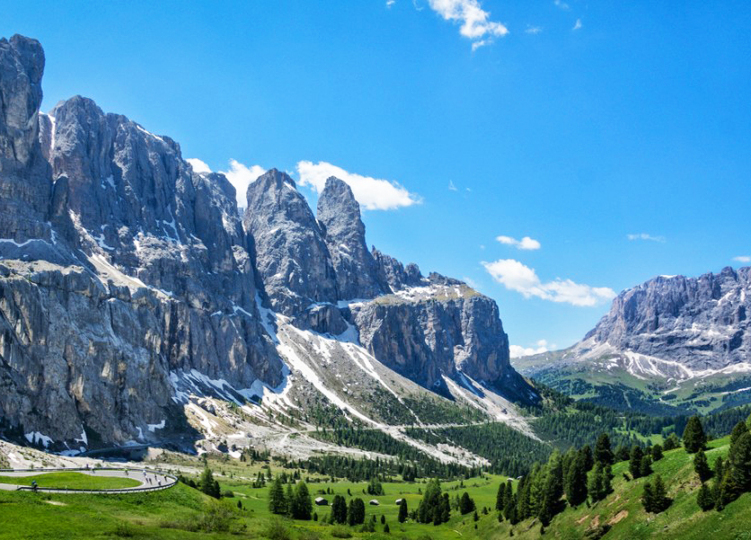

Alpejska przygoda na szosie
Zorganizowane wyprawy rowerowe
Serdecznie zapraszamy na wyprawę rowerową, gdzie podczas 7 dniowej wycieczki pokonamy na rowerach szosowych najsynniejsze Alpejskie przełęcze jak np. Grossglockner, Passo Giau, Masyw Sella Rondy. Niezwykle malownicze tereny zapewnią niezapomniane wrażenia natomiast jazda rowerem będzie obfitowała w pełne różnorodnych podjazdów trasy. Liczne przewyższenia zaspokoją głód niestrudzonej jazdy zarówno średniozaawansowanym jak i zaawansowanym kolarzystom.
Każdego dnia będziemy pokonywać od 50 do 100 km. Na każdym etapie jazdy towarzyszyć będzie nam samochód techniczny służącycy pomocą w każdej sytuacji. Każdy dzień będziemy kończyli wieczorem wspomagającym odpoczynek, bogatym w regionalne potrawy w otoczeniu niezwykłej przyrody.
Zapraszamy!!!